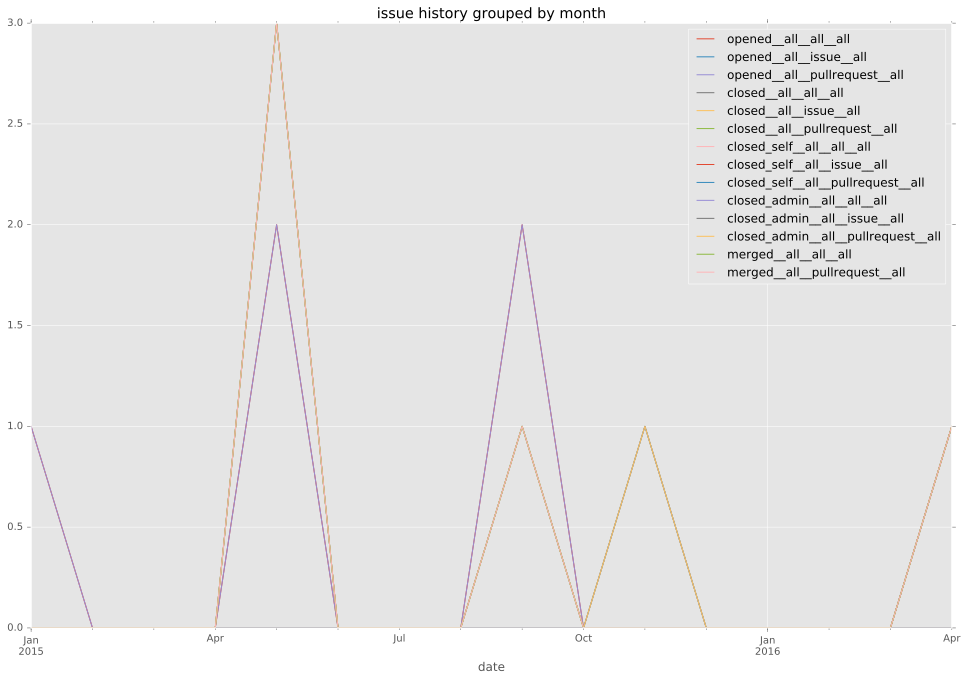
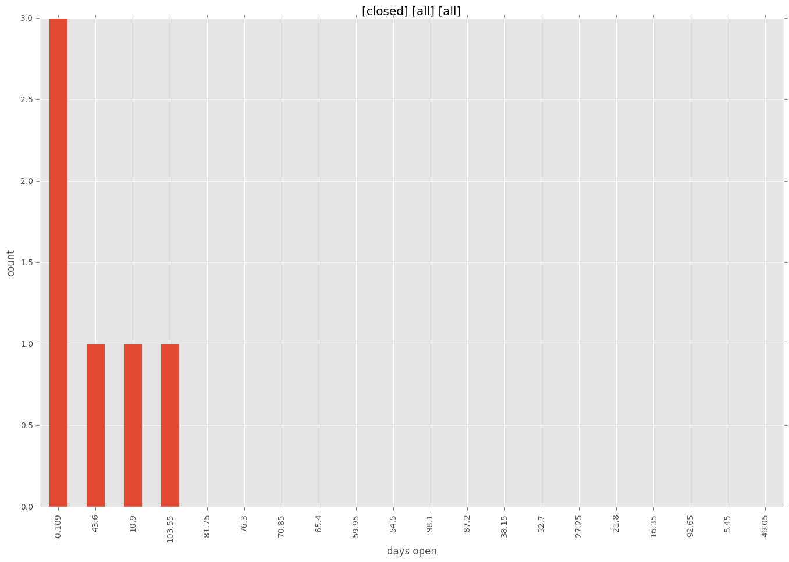
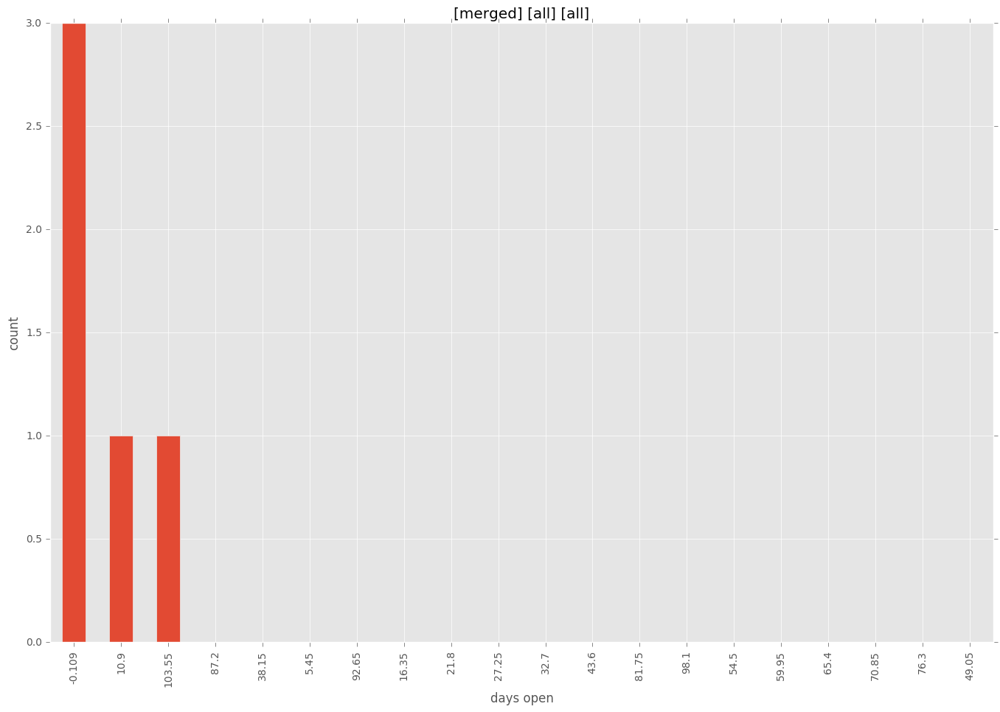
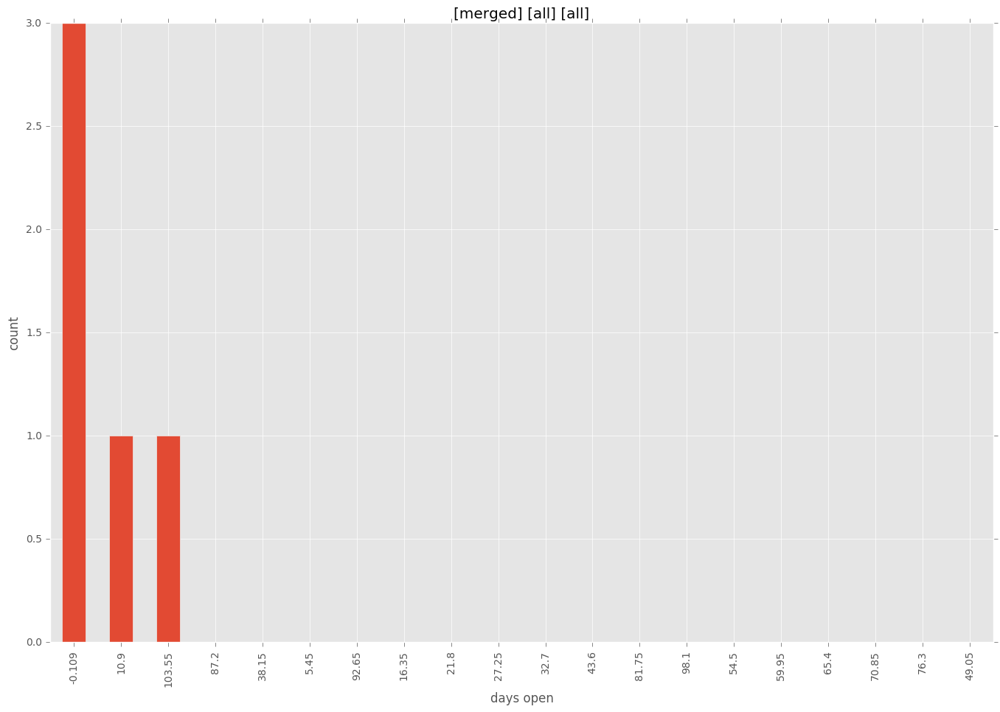

total issue counts
bugfix pull request: 3
feature pull request: 2
pullrequest: 6
new plugin: 1
issue history

days open by issue type
bugfix pull request
count: 6
std: 0.0
min: 0
max: 0
median: 0.0
mean: 0.0
feature pull request
count: 3
std: 19.6299091524
min: 15
max: 49
median: 15.0
mean: 26.3333333333
all
count: 11
std: 43.1207606612
min: 0
max: 109
median: 0.0
mean: 27.0
pullrequest
count: 0
std: nan
min: nan
max: nan
median: nan
mean: nan
new plugin
count: 2
std: 0.0
min: 109
max: 109
median: 109.0
mean: 109.0
closures grouped by total days open



 
